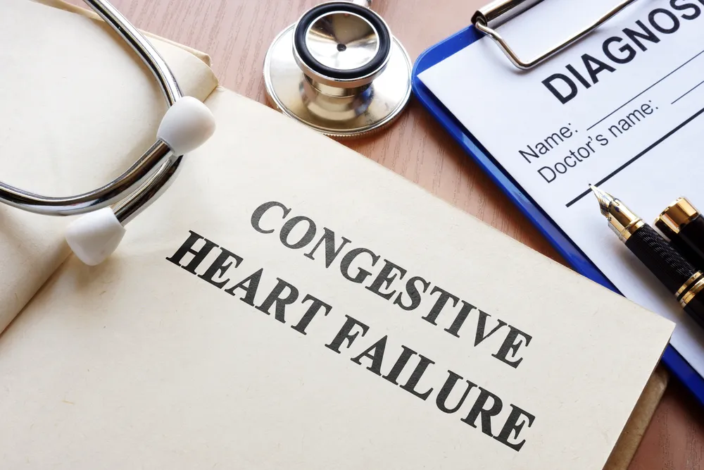

Congestive Heart Failure: The 4 Stages, Symptoms, and Causes

“Heart failure” on its own without context just sounds dire. While it’s obviously serious, there is a lot more to know about it. For example, there are various stages of congestive heart failure (CHF), and they mean different things in terms of treatment and outlook (or prognosis).
To help clear up any misconceptions from this scary-sounding medical term, let’s take a closer look at what CHF is, its main symptoms, and what to expect if a doctor has diagnosed you. We’ll also give you some tips on how to manage it to maximize your quality of life…
What Is Congestive Heart Failure?
According to Hopkins Medicine , CHF is a “serious condition” affecting more than 5 million Americans. It refers to the heart’s inability to pump blood efficiently. But, the source notes that although the term uses the word “failure,” it’s not to be confused with a sudden malfunction that threatens your life.
It means that blood is returned to the heart faster than the heart can pump it out, leading to the “congested” part. The reason for this is that the muscle of the heart is not able to contract properly or has some kind of mechanical issue. The amount of blood that fills the heart becomes more limited, which is a problem when it comes to meeting the demand for oxygen to other body parts.
What are Some of the Symptoms?
Healthline explains you might not feel anything wrong at all in the early stages of CHF. However, you may notice you’re fatigued a bit more often and/or that you’re gaining a bit of unexplained weight with possible swelling of the ankles or legs. You may also need to urinate more frequently, often rousing you from sleep.
As the condition progresses, you’ll likely experience symptoms such as an irregular heartbeat , coughing from congested lungs, wheezing, and shortness of breath. When it becomes “severe,” you’ll likely feel chest pain that radiates through your upper body and skin that turns blue due to lack of oxygen. Fainting is also possible.
Possible Causes of Congestive Heart Failure
WebMD says there are a number of possible reasons why one would develop CHF, largely due to sustained damage. For example, it says that a heart attack that blocks a coronary artery can cease the blood flow to your heart muscle. Meanwhile, other factors that can damage the heart include infections and substance abuse.
The source explains that diseases such as thyroid disease and diabetes can be causes of heart failure. Coronary artery disease in particular can limit the supply of blood to the heart muscle due to an issue with the arteries (which narrow or become blocked). Other health conditions such as high blood pressure (hypertension) can also contribute to CHF .
The Four Stages of Congestive Heart Failure
There are four stages of CHF, including stage A, B, C, and D. In the early stages, a patient may have a high risk of developing heart failure, whereas a patient with stage D will have advanced heart failure.
To find out what stage you’re in, ask your doctor. Next, we’ll take a closer look at what each stage of heart failure entails.
Stage A
Stage A is considered pre-heart failure and you’re at risk for developing CHF due to your family history. WebMD explains certain health issues put you at a greater risk for developing CHF. These may include:
- High blood pressure
- Diabetes
- Coronary artery disease
- Metabolic syndrome
- A history of alcohol abuse
- A history of rheumatic fever
- A family history of cardiomyopathy
- A history of taking certain drugs that can cause damage to the heart
Stage B
Stage B is when you don’t have symptoms but you’ve been diagnosed with systolic left ventricular dysfunction (when the left chamber of your heart isn’t working properly). This could be caused by damage from a heart attack or heart valve disease.
The Cleveland Clinic says, “Most people with Stage B heart failure have an echocardiogram (echo) that shows an ejection fraction (EF) of 40-percent or less.”
Stage C
If you have stage C heart failure, it means you’ve been diagnosed with systolic heart failure. It also means you either previously or currently have signs and symptoms of the condition. Some of these include:
- Shortness of breath
- Feeling fatigued
- Weak legs
- Decreased ability to exercise
- Swollen feet, ankles, lower legs, or abdomen
Stage D
Finally, in stage D, you’ll still experience “advanced” symptoms following medical care. This is the final stage of CHF. At this point, you’ll likely need other medical interventions, which we’ll go into more detail about soon.
How CHF is Diagnosed
There are several ways a doctor can diagnose heart failure, aside from considering your own medical history and your family history, as well as administering a physical exam. You might be asked to take a stress test to see how your heart responds to physical demands, for example.
The doctor can also turn to an electrocardiogram (ECG) to monitor your heart’s electrical activity, as well as a chest X-ray to pinpoint an enlarged heart or damaged lungs. It can also use a blood test for B-type natriuretic peptide (BNP) to determine how severe the heart failure is.
Treatment Options for Stages A and B
WebMD notes the types of treatment available correspond with the stage you’re in. In stage A, it says the common recommendations from doctors include more exercise and quitting smoking/drinking. You might also need to lower your blood pressure or cholesterol.
In stage B, you may be prescribed beta-blockers or angiotensin-converting enzyme (ACE) inhibitors. You might also need an implantable cardiac defibrillator (ICD) or surgery to repair arteries or valves.
Treatment Options for Stages C and D
In stage C, there can be ACE inhibitors and beta-blockers, as well as several other medications, such as hydralazine or diuretics. An ICD or biventricular pacemaker may also be an option. Lifestyle adjustments, including reducing salt and losing weight, can be other approaches to managing CHF.
In stage D you’ll likely need a ventricular assistance device or a heart transplant. “Continuous infusion of intravenous inotropic drugs ” may also be an approach at this advanced stage, explains WebMD.
What is the Long-Term Outlook?
Yes, heart failure can be fatal – when it’s untreated. Healthline explains that about 50-percent of patients with CHF live beyond 5-years following diagnosis and points to a study that estimates around 20-years for those diagnosed under age 50 with lower risk factors.
The source also notes age and gender can affect these outcomes. Women with CHF tend to live a bit longer than men with this condition but may experience more symptoms.
How to Improve Your Quality of Life
There are a number of approaches to improve your quality of life, including getting more moderate-intensity exercise (talk to your doctor first) and managing stress .
Eating a heart-healthy diet that’s low in trans fats and high in whole grains is also good for slowing down CHF, according to Medical News Today . You should also be sure to get your blood pressure checked during routine check-ups at the doctor or get an at-home blood pressure monitor to check it yourself regularly.
Source: https://activebeat.com/your-health/congestive-heart-failure-the-4-stages-symptoms-and-causes/